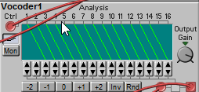
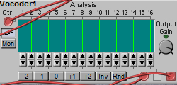
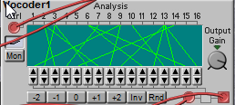

@SirSickSik this is why help files help. please help 
How to patch a Vocoder
SirSickSik
#24
ehm.. the rise and fall values are at zero?
and btw, these modules were a quick recoding of the analyser module, just giving each of the displays an output.. no actual success granted.. ps... you connected it right.. without a demo 
stepan.dvoracek
#25
Ok, I must have had something wrong in my setup yesterday. I added a noiseOsc. It basically works, but the trouble is, that the vocoder modules use almost all the cpu power, so it's quite hard to experiment with the carrier source (you can hear a few pops in the demo).
I looked into this book: https://goo.gl/cXKYg1 and it suggests at least 15 bands in a stepwise fashion: six filters of 100Hz width from 200 to 800Hz, six filters of 150 Hz width between 800Hz and 1700Hz etc. This way we might get similar result with more cpu left. Also the "rise" and "fall" dials don't seem to have any effect.
I think that a nice sounding vocoder would be a really cool thing, so thanks for all your effort. 
{kind=link}
Vocoder_0.axp (9.2 KB)
toneburst
#26
I think an all-in-one Vocoder module, much like the Nord Modular/G2 one would be cool. I think that would be the way to make it more processor-efficient.
Unfortunately, it will need someone with better C and DSP chops than me to code one.
a|x
toneburst
#28
I think 10 bands would probably be fine.
At one point, I had a number of vocoders, and was blue to do a side-by-side comparison.
The one that came out sounding best to my ear, was actually the one with the fewest bands 8, in that case, I think).
The one with most bands (the 40-band vocoder in the Novation Nova) was the most intelligible, but lacked that special robo-character I love.
I think choice of band centre-frequencies and bandwidths probably has a lot to do Witt how good a vocoder sounds, combined with a little pre-processing of the modulating signal.
a|x
toneburst
#29
Oh, and a good sibilance/unvoiced detector, and choice of mixing in either high-pass filtered modulator signal or white noise to the output signal makes a big difference.
a|x
philoop
#30
I was wrong about 10 bands, there are 16 bands ..
but i also think 8 would be also good.
whats cool about the micro modular is:


